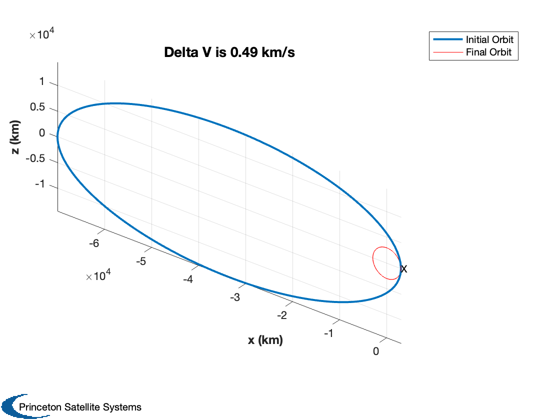

Maneuver from Gateway to 15 km
A two maneuver sequence to go from the Gateway orbit to a 15 km circular orbit.
See also: RPRA2AE, OrbMnvrLowerApogee, DVHoh
%-------------------------------------------------------------------------- % Copyright (c) 2019 Princeton Satellite Systems, Inc. % All rights reserved. %-------------------------------------------------------------------------- % Since 2019.1 %-------------------------------------------------------------------------- % Constants mu = Constant('mu moon'); rM = Constant('equatorial radius moon'); % Gateway rA = 70000; rP = 3000; [a, e] = RPRA2AE( rP, rA ); el = [a pi/2 0 0 e 0]; % For plotting OrbMnvrLowerApogee( el, rP, mu ); % Circularize deltaVLA = OrbMnvrLowerApogee( el, rP, mu ); % Hohman rF = 15+rM; deltaVH = DVHoh( rP, 15+rM, [], mu ); fprintf('Gateway Apolune %8.2f km\n',rA); fprintf('Gateway Perilune %8.2f km\n',rP); fprintf('Final orbit radius %8.2f km\n',rF); fprintf('Cicularization maneuver delta v %5.2f km/s\n',deltaVLA); fprintf('Hohmann maneuver delta v %5.2f km/s\n',deltaVH); %-------------------------------------- % $Id: 3af6374e00a56250d7673de963137bfcd291a069 $
Gateway Apolune 70000.00 km Gateway Perilune 3000.00 km Final orbit radius 1753.00 km Cicularization maneuver delta v 0.49 km/s Hohmann maneuver delta v 0.39 km/s